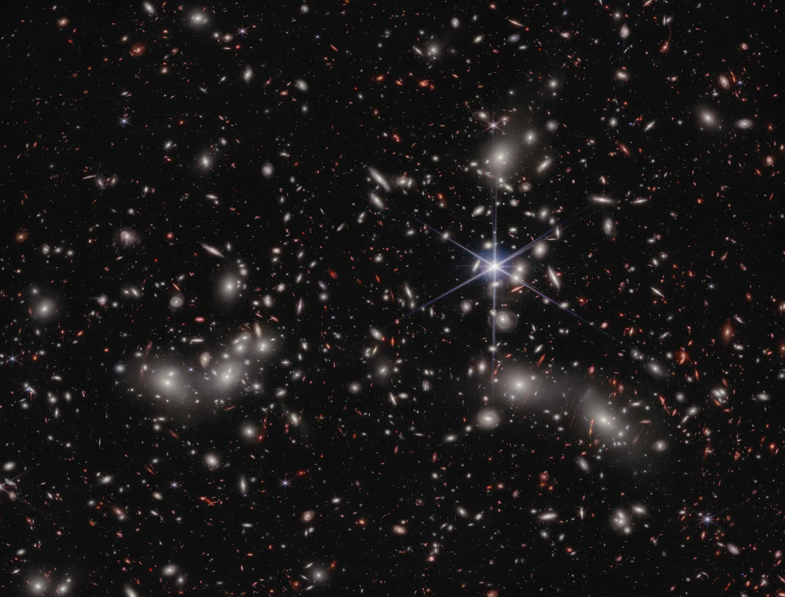
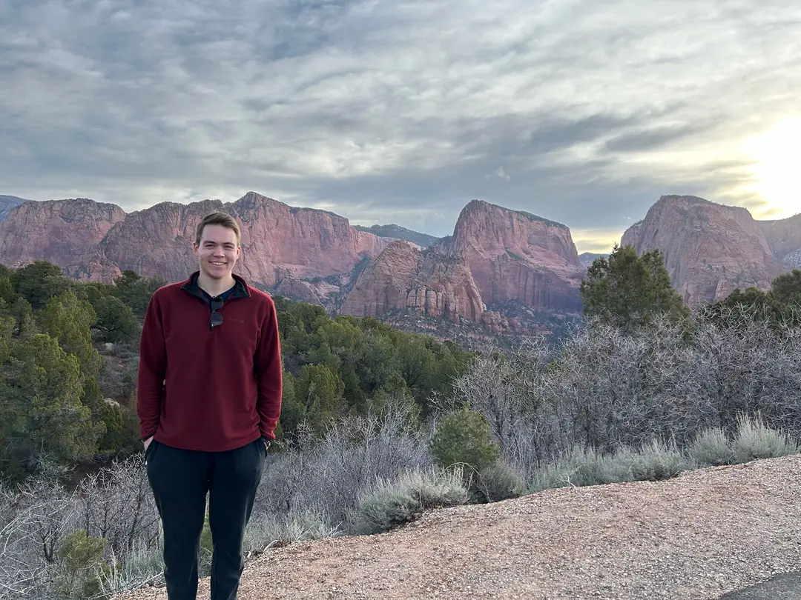

Stephen McKay
Physics PhD Candidate
University of Wisconsin–Madison
porto, portugal
I'm an astrophysicist interested in galaxy evolution, observational cosmology, and machine learning methods.
I'm currently a fifth-year PhD candidate at the University of Wisconsin–Madison, working with Amy Barger in the Department of Astronomy. I'm defending my dissertation in May 2026.
I enjoy wrestling with scientific questions and am grateful for the privilege to work with data that genuinely touches the boundaries of the known Universe.

A2744 lensing cluster field, uncover jwst team
I study massive galaxies in the early Universe, primarily dusty star-forming galaxies, the most extreme star factories in the cosmos.
Using state-of-the-art telescopes such as the Atacama Large Millimeter/submillimeter Array and the James Webb Space Telescope, I investigate how these galaxies form and evolve over cosmic time.
I also love coding and am interested in applying machine learning methods to address complex problems with large, multifaceted datasets.
devils lake, wi
Feel free to contact me via email or via LinkedIn.
If you want to jump straight to the dry academic stuff, you can check out my CV.
Outside of work, I like playing guitar, drawing, history podcasts, traveling, and being in nature—especially skiing and hiking. Someday when I have more time, I hope to put together an art/photo gallery page. Till then, here's a random picture of me in Zion NP :)

And amid all the splendours of the World, its vast halls and spaces, and its wheeling fires, Ilúvatar chose a place for their habitation in the Deeps of Time and in the midst of the innumerable stars.
— J.R.R. Tolkien, The Silmarillion